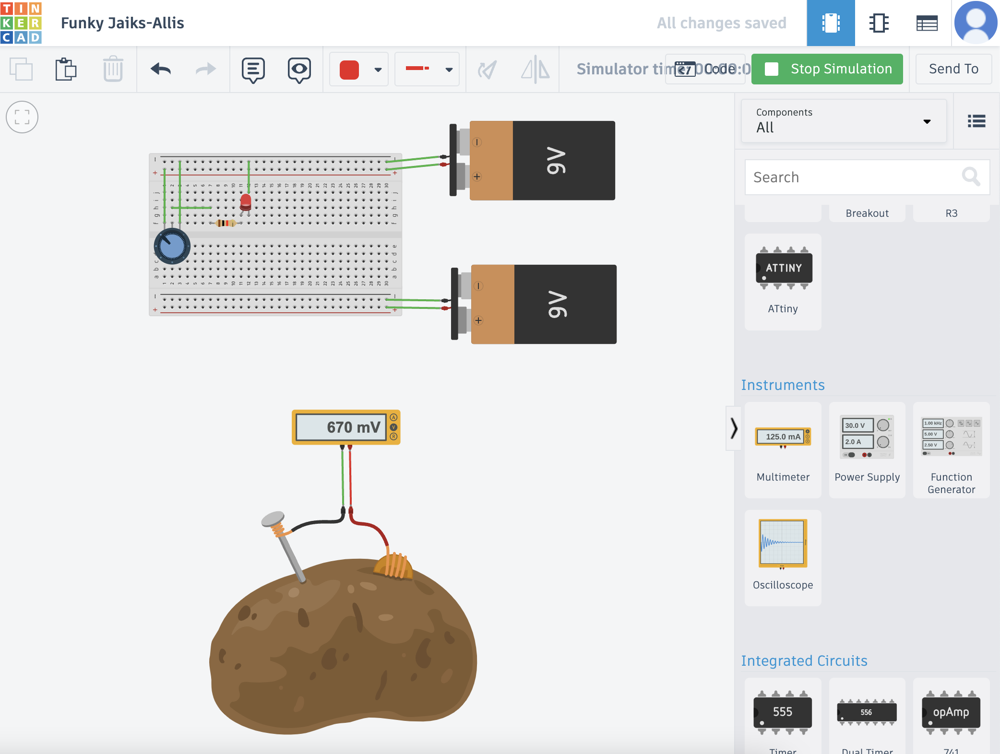
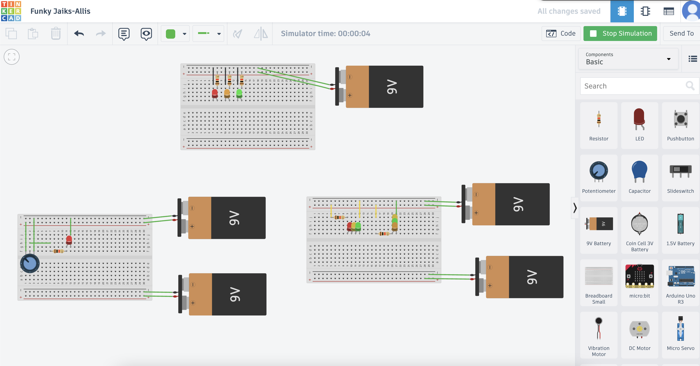
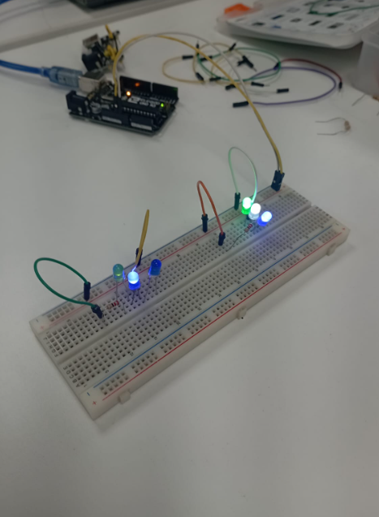
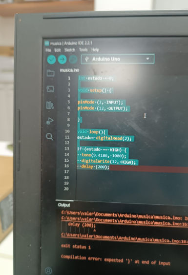
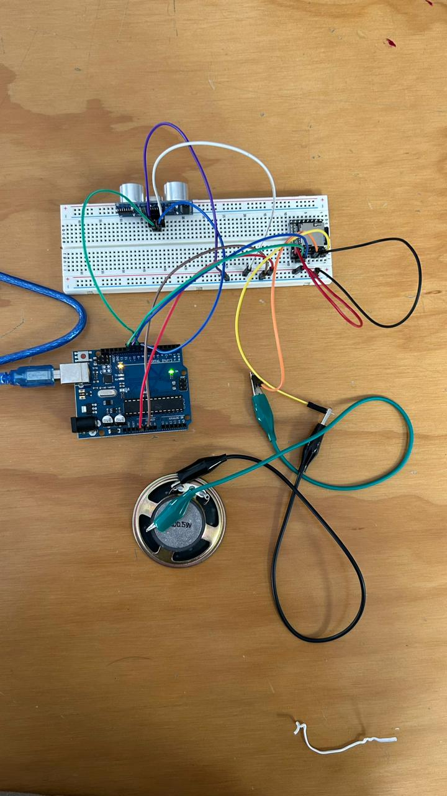
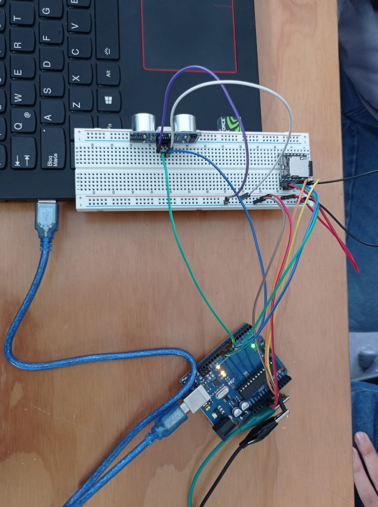

|
Mi nombre es Karla y tengo 21 añitos. Sobre mí, me encanta escuchar música, pero sobre todo, gosarla y bailarla. Me gustan las caminatas largas y, a veces, en compañía. Amo ilustrar en digital o a mano, soy una soñada incurable, ésta es mi terapia. (por así decirlo jaja) |
Ejercicio 3

|
El último ejercicio consistió en idealizar y plasmar, en una hoja, un producto tecnológico e innovador que pueda solucionar una problemática: social, ambiental, etc. Mi producto se llamó 'Somnocomfort', y este busca solucionar los problemas de estrés y sueño. |
PROMEDIO 2: Planificando un proyecto innovador
Ejercicio 1
|  |
Empezamos el 2do promedio 🤗. Para este primer ejercicio, utilizamos Tinkercat para aprender sobre como se genera y como viaja la energía, para finalmente, crear luz ✨, encendiendo un LED. |
Ejercicio 2
|  |
En esta semana, en la clase virtual, en Tinkercat, realizamos el ejercicio del semáforo, el cual, consiste en prender 3 focos LED, de colores: rojo, verde y amarillo. Este tuvo un resultado divertido y atractivo. ❤️💚💛 |
|  |
En la clase presencial, realizamos el mismo ejercicio del semáforo, con la diferencia de que este debia ser realizado con las piezas reales. |
|  |
El mecanismo se debía programar para que, funcione y se enciendan los 3 LED. Este se vió de esta forma: |
Ejercicio 3
|  |
El ejercicio fue grupal. Aquí fue donde desarrollamos el sistema eléctrico de nuestro proyecto de innovación, el cual, es un bastón para personas invidentes. Este cuenta con un sensor de objetos y una bocina para proyectar sonidos personalizados. El sistema se armó así: |
|  |
Finalmente, el sistema se progrmamó para sincronizar la información con el mecanismo electrónico. |